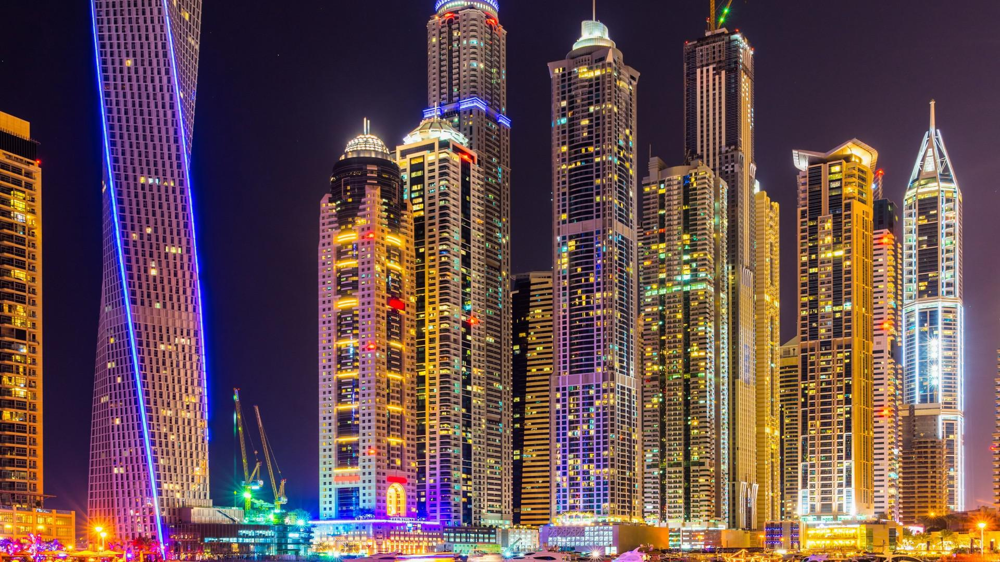

How great is Dubai
Dubai is one of the world's most popular tourist destinations. This can be accredited to Dubai's mix of cosmopolitan lifestyle and local culture, as well as the city's having the second most five-star hotels in the world and the tallest building in the world
The massive Dubai Mall is one of the largest shopping centers in the world and houses more than 1,300 stores. Even if you aren't interested in buying anything, a visit to this immense retail center is a must: The Dubai Mall also contains numerous entertainment facilities, such as an ice rink, a movie theater and several kid-friendly attractions, including an aquarium that houses thousands of underwater creatures. If you happen to be around at night, stop by the Dubai Fountain outside of the mall. Created by the team who designed the Bellagio's famous dancing fountains, the fountain features nightly shows set to a mix of western and eastern music.
